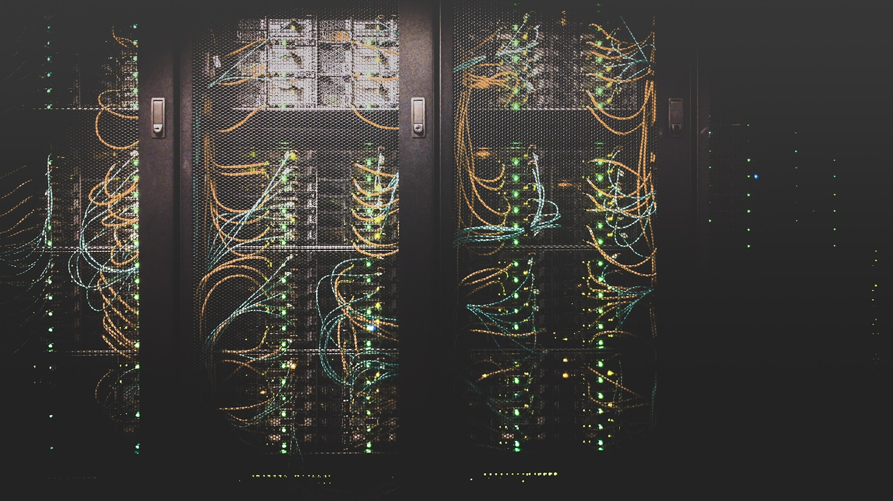

개별 설비와 데이터를 하나의 운영 흐름으로 연결해 더 명확한 시설 관리 환경을 만듭니다.

Overview
설계 단계부터 시공, 데이터 연동, 운영 이후의 관리까지 통합 관점으로 지원합니다.
Capabilities
운영자가 핵심 정보를 한눈에 파악할 수 있는 관제 환경을 구성합니다.
시설의 확장성과 유지관리 효율을 고려해 통신 인프라를 설계합니다.
시공부터 점검, 장애 대응까지 운영 단계에 맞춰 지원합니다.